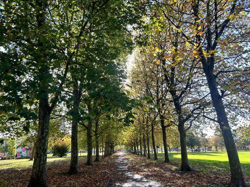

Shop local · Local guide
Local market

North Finchley has a long history of markets and market pop-ups, including a regular stall market held on the Lodge Lane car park.
Lodge Lane market — a stall market held on part of the Lodge Lane car park.
Seasonal makers' pop-ups — occasional craft and food stalls around the town centre and the Grand Arcade.